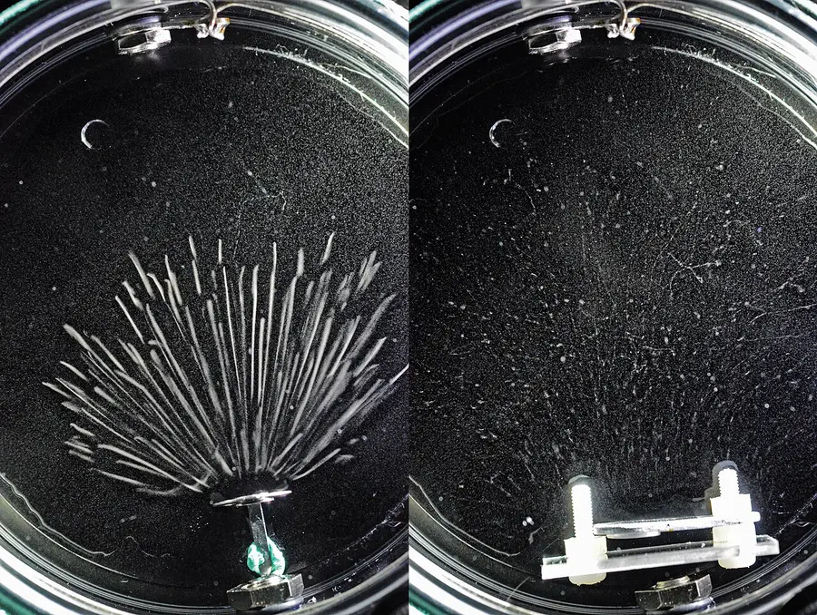

Themes › Theme E Nuclear and quantum physics
E.3Radioactive decay + HL extra
What holds a nucleus together, and why do some nuclei fall apart? This topic covers the strong nuclear force, binding energy and $E = mc^2$, the three kinds of radioactive decay (alpha, beta and gamma), and how half-life lets us make precise predictions about a completely random process. HL students go further, with the stability of nuclei, nuclear energy levels, the neutrino, and the exponential decay law (sections 11–16).
Knowledge and science
Nature of science
Serendipity. In 1896 Henri Becquerel left uranium salts on a wrapped photographic plate in a drawer, and found the plate fogged. Marie and Pierre Curie went on to discover polonium and radium, and Marie Curie coined the word "radioactivity".
Conservation laws. Beta particles come out with a range of energies, which seemed to break the conservation of energy. In 1930 Wolfgang Pauli proposed an unseen particle to carry the missing energy. The neutrino was finally detected in 1956.
Risk. Early workers handled radium with bare hands, and radium paint was used on watch dials and sold in "health" tonics. The harm it caused led to the first radiation safety rules. Today the same radiation treats cancer.
Patterns. Each individual decay is random, yet a large sample decays in a completely predictable way. Physics often finds simple laws in the behaviour of huge numbers of random events.
ToK: questions to think about
- Can a random process be a law of nature? No one can say when a particular nucleus will decay, yet half-lives are known to many decimal places. What kind of knowledge is a probability?
- Should we believe in what we can't detect? Pauli's neutrino was accepted by many physicists for over 20 years before anyone detected it. What justified that belief?
- Who decides what risk is acceptable? Radioactive sources are used in hospitals, smoke detectors and power stations. Should the public or experts decide how much risk is worth the benefit?
- How far can we extrapolate? Radioactive dating assumes that half-lives have never changed. How do we know that this was true millions of years ago?
1. Isotopes and the strong nuclear force
Isotopes are nuclei with the same number of protons but different numbers of neutrons (E.1). Carbon-12, carbon-13 and carbon-14 all have 6 protons, with 6, 7 and 8 neutrons. Some isotopes are stable; others, like carbon-14, are radioactive.
Protons repel each other electrically, and at nuclear distances that repulsion is enormous, about 230 N between two protons $10^{-15}$ m apart. Gravity is far too weak to hold them together. Something else must.
The strong nuclear force acts between all nucleons (proton–proton, proton–neutron and neutron–neutron). It is attractive and very strong, but short-range: it acts only up to about $3 \times 10^{-15}$ m, roughly the distance between neighbouring nucleons. At even smaller distances (under about $0.5 \times 10^{-15}$ m) it becomes repulsive, which stops nucleons merging.
Because it is short-range, each nucleon is only held by its nearest neighbours. The electric repulsion, though, acts between every pair of protons in the nucleus. This is why large nuclei need extra neutrons, which add strong-force "glue" without adding repulsion.
2. Mass defect and binding energy
The mass of a nucleus is always less than the total mass of its separate protons and neutrons. The difference is the mass defect, $\Delta m$.
Mass and energy are equivalent. The binding energy of a nucleus is the energy needed to separate it completely into its individual nucleons. It equals the energy released when the nucleus forms, and is given by $E = \Delta m\,c^2$.
Nuclear masses are given in three units:
- kilograms;
- unified atomic mass units: $1\ \text{u} = 1.661 \times 10^{-27}$ kg, one-twelfth of the mass of a carbon-12 atom;
- $\text{MeV}\,c^{-2}$: $1\ \text{u} = 931.5\ \text{MeV}\,c^{-2}$. Using this, a mass in u converts directly into an energy: multiply by 931.5 to get MeV.
Worked example: binding energy of helium-4
A helium-4 nucleus has a mass of 4.001506 u. A proton is 1.007276 u and a neutron 1.008665 u. Find its binding energy and binding energy per nucleon.
Separate nucleons: $2 \times 1.007276 + 2 \times 1.008665 = 4.031882$ u.
Mass defect: $\Delta m = 4.031882 - 4.001506 = 0.030376$ u.
Binding energy: $0.030376 \times 931.5 = 28.3$ MeV. In joules: $28.3 \times 10^{6} \times 1.60 \times 10^{-19} = 4.53 \times 10^{-12}$ J.
Per nucleon: $\dfrac{28.3}{4} = 7.07$ MeV.
In every nuclear reaction, the energy released is $\Delta m\,c^2$, where $\Delta m$ is the total mass before minus the total mass after. Energy is released only if the products have less mass (and so more binding energy) than the starting nuclei.
3. Binding energy per nucleon
The binding energy per nucleon measures how tightly each nucleon is held. The higher it is, the more stable the nucleus.
- For light nuclei it rises steeply, because each new nucleon has more neighbours to bond with.
- It peaks near iron and nickel ($A \approx 56$–62). These are the most tightly bound nuclei.
- It falls gradually for heavier nuclei, because the electric repulsion of all the protons grows.
Any reaction that moves nuclei up the curve releases energy. That is why joining light nuclei (fusion, E.5) and splitting heavy ones (fission, E.4) both release energy.
Worked example: reading the curve
Uranium-235 has a binding energy per nucleon of about 7.6 MeV. Find its total binding energy.
$235 \times 7.6 \approx 1800$ MeV, about $2.9 \times 10^{-10}$ J. That is the energy needed to pull one uranium nucleus completely apart.
4. Random and spontaneous decay
An unstable nucleus can decay, emitting radiation and becoming a different nucleus (often of a different element). Radioactive decay is:
- random: it is impossible to predict when a particular nucleus will decay, or which nucleus in a sample will decay next. Every nucleus of that kind has the same chance of decaying in a given time;
- spontaneous: it is not affected by outside conditions such as temperature, pressure or chemical reactions.
A Geiger counter near a source clicks irregularly, and repeated counts in equal times vary. With large numbers of nuclei, though, the fraction that decays in a given time is very predictable, like tossing millions of coins.
5. Alpha, beta and gamma decay
In every decay equation, nucleon number (top numbers) and charge (bottom numbers) are both conserved.
Alpha (α) decay
The nucleus emits an alpha particle, a helium-4 nucleus: two protons and two neutrons. $A$ falls by 4 and $Z$ by 2. It happens mostly in heavy nuclei.
$$^{210}_{\;84}\text{Po} \rightarrow\, ^{206}_{\;82}\text{Pb} + {}^{4}_{2}\alpha$$Beta-minus (β⁻) decay
A neutron in the nucleus turns into a proton, and the nucleus emits an electron and an antineutrino. $A$ stays the same and $Z$ rises by 1. It happens in nuclei with too many neutrons.
$$^{14}_{\;6}\text{C} \rightarrow\, ^{14}_{\;7}\text{N} + {}^{\;\;0}_{-1}\text{e} + \bar{\nu}_e$$Beta-plus (β⁺) decay
A proton turns into a neutron, and the nucleus emits a positron (the antiparticle of the electron) and a neutrino. $A$ stays the same and $Z$ falls by 1. It happens in nuclei with too many protons.
$$^{18}_{\;9}\text{F} \rightarrow\, ^{18}_{\;8}\text{O} + {}^{\;\;0}_{+1}\text{e} + \nu_e$$Gamma (γ) decay
A nucleus in an excited state (often left that way after an alpha or beta decay) drops to a lower energy state and emits a gamma-ray photon. $A$ and $Z$ don't change: it is the same nuclide, with less energy. An asterisk marks the excited nucleus.
$$^{60}_{28}\text{Ni}^{*} \rightarrow\, ^{60}_{28}\text{Ni} + \gamma$$Worked example: finding the missing nucleus
Thorium-232 ($Z = 90$) undergoes alpha decay, and the product then undergoes β⁻ decay. Find the final nucleus.
Alpha: $A = 232 - 4 = 228$, $Z = 90 - 2 = 88$ (radium-228).
Beta-minus: $A = 228$, $Z = 88 + 1 = 89$. The final nucleus is $^{228}_{\;89}\text{Ac}$ (actinium-228). You don't need to know the chemical symbols; they would be given.
Worked example: energy of an alpha decay
Using atomic masses, polonium-210 is 209.982874 u, lead-206 is 205.974465 u and helium-4 is 4.002603 u. Find the energy released when polonium-210 alpha-decays.
$\Delta m = 209.982874 - (205.974465 + 4.002603) = 0.005806$ u, so $E = 0.005806 \times 931.5 = 5.41$ MeV.
Almost all of this is carried by the alpha particle as kinetic energy. Using atomic masses is fine here: the electrons balance on both sides.
6. Neutrinos and antineutrinos
The neutrino ($\nu_e$) and antineutrino ($\bar{\nu}_e$) have no charge and almost no mass, and they hardly interact with matter at all: billions pass through your body every second, mostly from the Sun, without any effect.
- β⁻ decay emits an electron and an antineutrino.
- β⁺ decay emits a positron and a neutrino.
They are needed to conserve energy and momentum in beta decay (see section 14 for the evidence).
7. Penetration and ionization
As radiation passes through matter it knocks electrons out of atoms, ionizing them. The more strongly a radiation ionizes, the faster it loses its energy, and so the less far it gets.
Alpha (α): a helium nucleus, charge $+2e$. Strongly ionizing. Range a few cm in air; stopped by a sheet of paper or the outer layer of skin. Deflected slightly by electric and magnetic fields.
Beta (β): an electron (β⁻) or positron (β⁺), charge $\mp e$. Medium ionizing. Range up to about 1 m in air; stopped by a few mm of aluminium. Deflected strongly by fields (β⁻ the opposite way to α).
Gamma (γ): a high-energy photon, no charge. Weakly ionizing. Very long range in air (its intensity falls with distance); never completely stopped, but reduced greatly by several cm of lead or thick concrete. Not deflected by fields.

Outside the body, alpha is the least dangerous, because it can't get through the skin. Inside the body (if swallowed or breathed in) it is the most dangerous, because all its ionization happens in a small volume of living cells.
8. Activity, count rate and half-life
- The activity $A$ of a sample is the number of nuclei decaying per second. Its unit is the becquerel: 1 Bq = 1 decay per second.
- The count rate is the number of decays a detector actually records per second (or per minute). It is always less than the activity, because radiation goes off in all directions and not all of it is detected.
As a sample decays, there are fewer undecayed nuclei left, so the activity falls. The time taken is described by the half-life:
The half-life $T_{1/2}$ is the time taken for the number of undecayed nuclei, or the activity, to fall to half its value. It is the same whatever amount you start with, and it is fixed for each nuclide: from fractions of a second to billions of years.
After $n$ half-lives, the fraction left is $\left(\tfrac{1}{2}\right)^n$. At SL you only need whole numbers of half-lives.
Worked example: a medical tracer
A sample of a tracer with a half-life of 6.0 hours has an activity of 800 MBq. (a) What is its activity after 24 hours? (b) What fraction of the original nuclei has decayed by then?
(a) $24 \div 6.0 = 4$ half-lives: $800 \rightarrow 400 \rightarrow 200 \rightarrow 100 \rightarrow 50$ MBq.
(b) The fraction left is $\left(\frac{1}{2}\right)^4 = \frac{1}{16}$, so $\frac{15}{16}$ has decayed.
Worked example: finding a half-life
The count rate from a sample falls from 640 to 40 counts per minute in 12 days (after correcting for background). Find the half-life.
$640 \rightarrow 320 \rightarrow 160 \rightarrow 80 \rightarrow 40$: four half-lives in 12 days, so $T_{1/2} = 3.0$ days.
Measuring a half-life. Record the count rate at regular intervals, subtract the background, and plot a graph of corrected count rate against time. Read off the time for the count rate to halve, several times from different starting points, and average. (HL: a graph of $\ln(\text{count rate})$ against time is a straight line with gradient $-\lambda$.)
9. Background radiation
A Geiger counter registers counts even with no source nearby. This background radiation comes from radon gas from rocks, cosmic rays, rocks and building materials, food and drink, and medical sources. It is random and fairly constant in one place.
- Measure the background count rate first, with no source present, over a long time to reduce the random variation.
- Subtract it from every reading to get the corrected count rate due to the source.
Worked example: correcting for background
A detector records 245 counts per minute near a source; the background is 25 counts per minute. The half-life is 2.0 hours. What will the detector record 4.0 hours later?
Source alone: $245 - 25 = 220$ counts per minute. After 2 half-lives: $\frac{220}{4} = 55$. The detector records $55 + 25 = 80$ counts per minute. Halving 245 twice (to 61) would be wrong, because the background doesn't decay.
10. Using radioactivity
The choice of isotope depends on what radiation it emits (how penetrating it is) and its half-life (how long it stays active).
- Medical tracers: a gamma emitter (it must get out of the body to be detected) with a half-life of a few hours, long enough to do the scan but short enough not to keep irradiating the patient. Technetium-99m (half-life 6 hours) is the most common.
- Finding leaks in underground pipes: a little gamma emitter with a short half-life is added to the fluid. Radiation builds up in the soil above the leak, and is detected from the surface.
- Controlling the thickness of materials: a source on one side of a sheet and a detector on the other. Beta is used for paper and thin plastic (alpha would be stopped completely; gamma would hardly change). Gamma is used for thick steel. The source needs a long half-life so the count rate only changes when the thickness does.
- Radioactive dating: living things take in carbon-14 from the air; after death it decays with a half-life of 5730 years, so the remaining activity gives the age of wood, bone or cloth up to about 50 000 years old. Rocks are dated using isotopes with half-lives of billions of years, such as uranium-238 and potassium-40.
11. Evidence for the strong nuclear force HL
- Nuclei exist. Protons are packed together despite enormous electric repulsion, and gravity is about $10^{36}$ times too weak to help. A strong attractive force must act.
- Deviations from Rutherford scattering (E.1). High-energy alpha particles that reach a nucleus scatter differently from the prediction for the electric force alone.
- Constant density and binding energy. All nuclei have the same density (E.1), and above $A \approx 60$ the binding energy per nucleon is roughly constant, at 7.5–8.8 MeV. If every nucleon attracted every other, the binding energy per nucleon would keep rising with $A$. Instead, each nucleon only feels its nearest neighbours, which shows the force is short-range.
12. Stability and the neutron–proton ratio HL
Plotting the neutron number $N$ against the proton number $Z$ of all the stable nuclides gives a narrow band.
- Light nuclei are stable with about equal numbers: $\frac{N}{Z} \approx 1$ (for example, $^{12}_{\;6}\text{C}$, $^{16}_{\;8}\text{O}$).
- Heavier nuclei need more neutrons, to dilute the electric repulsion: $\frac{N}{Z} \approx 1.5$ for lead-208.
- Nuclides above the band (too many neutrons) undergo β⁻ decay, which turns a neutron into a proton and moves them towards the band.
- Nuclides below the band (too many protons) undergo β⁺ decay.
- Very heavy nuclides (beyond $Z = 83$) undergo alpha decay, which removes nucleons fastest.
13. Nuclear energy levels HL
Just like atoms (E.1), nuclei have discrete energy levels. The evidence:
- Alpha particles from a particular nuclide all have one of a few definite energies, not a spread. Each value corresponds to the daughter nucleus being left in a different energy level.
- Gamma rays from a nuclide have a few definite photon energies (a line spectrum), each equal to the difference between two nuclear energy levels.
Nuclear energy levels are spaced by MeV, about a million times more than atomic levels (eV). That is why nuclear photons are gamma rays rather than visible light.
14. The beta spectrum and the neutrino HL
In beta decay, the energy released is fixed by the masses before and after, just as in alpha decay. If only two particles (the nucleus and the electron) came out, momentum conservation would give the electron the same energy every time. Instead, beta particles have a continuous spectrum of energies, from almost zero up to a maximum $E_{\max}$, equal to the energy released.
The explanation: a third particle, the (anti)neutrino, shares the energy. In each decay the energy is split differently between the electron and the antineutrino, and only rarely does the electron get almost all of it. The continuous beta spectrum is the evidence for the neutrino.
15. The decay constant and the decay law HL
The number of decays per second is proportional to the number of undecayed nuclei, $N$. The constant of proportionality is the decay constant $\lambda$ (unit $\text{s}^{-1}$, or $\text{h}^{-1}$, $\text{y}^{-1}$ and so on). This leads to exponential decay:
$N_0$ is the number of undecayed nuclei at $t = 0$. A large $\lambda$ means fast decay. This works for any time, not just whole half-lives.
What $\lambda$ means. For a short time $\Delta t$, the probability that a given nucleus decays is about $\lambda\Delta t$. This approximation only holds when $\lambda\Delta t$ is small. For example, if $\lambda\Delta t = 0.01$, the exact probability is $1 - e^{-0.01} = 0.00995$, very close. Over one half-life, $\lambda t = 0.693$, but the probability is 0.5. So "$\lambda$ is the probability of decay per unit time" is only approximately true, for $\lambda t \ll 1$.
16. Activity and half-life HL
Activity decays exponentially in the same way as $N$. The half-life formula comes from setting $N = \frac{N_0}{2}$: $\frac{1}{2} = e^{-\lambda T_{1/2}}$, so $\lambda T_{1/2} = \ln 2 \approx 0.693$.
Worked example: iodine-131
Iodine-131 has a half-life of 8.02 days. A sample contains 1.0 μg of it. Find (a) the decay constant in $\text{s}^{-1}$, (b) the activity and (c) the percentage left after 20 days.
(a) $\lambda = \dfrac{\ln 2}{8.02 \times 24 \times 3600} = 1.00 \times 10^{-6}\ \text{s}^{-1}$.
(b) Mass of one nucleus $\approx 131u = 131 \times 1.661 \times 10^{-27} = 2.18 \times 10^{-25}$ kg. $N = \dfrac{1.0 \times 10^{-9}}{2.18 \times 10^{-25}} = 4.6 \times 10^{15}$. $A = \lambda N = 4.6 \times 10^{9}$ Bq.
(c) In days, $\lambda = \dfrac{0.693}{8.02} = 0.0864\ \text{d}^{-1}$. $\dfrac{N}{N_0} = e^{-0.0864 \times 20} = e^{-1.73} = 0.18$, so 18% is left. Check: 20 days is 2.5 half-lives, and $\left(\frac{1}{2}\right)^{2.5} = 0.18$.
Worked example: carbon dating
Living wood has a carbon-14 activity of 0.25 Bq per gram of carbon. An ancient wooden tool has 0.080 Bq per gram. How old is it? ($T_{1/2} = 5730$ y)
$\lambda = \dfrac{0.693}{5730} = 1.21 \times 10^{-4}\ \text{y}^{-1}$. From $A = A_0e^{-\lambda t}$: $t = \dfrac{1}{\lambda}\ln\dfrac{A_0}{A} = \dfrac{\ln(0.25/0.080)}{1.21 \times 10^{-4}} = \dfrac{1.14}{1.21 \times 10^{-4}} \approx 9400$ years.
Common mistakes (HL) HL
- Mixing time units. $\lambda$ and $t$ must use the same unit. For an activity in Bq, $\lambda$ must be in $\text{s}^{-1}$.
- Using $\log_{10}$ instead of $\ln$. The decay law uses $e$, so use natural logs.
- Confusing the decay constant with the half-life. They are inversely related: a large $\lambda$ means a short half-life.
- Saying the beta spectrum shows energy is not conserved. It shows a third particle, the neutrino, shares the energy.
- Saying β⁺ decay happens in neutron-rich nuclei. Neutron-rich nuclei undergo β⁻ decay.
End of the HL-only content. Everyone continues below.
17. Common mistakes
- Thinking binding energy is energy stored in the nucleus. It is the energy you would have to supply to pull the nucleus apart. More binding energy means a more stable nucleus with less mass.
- Forgetting the (anti)neutrino in beta decay equations, or putting the antineutrino in β⁺ decay. β⁻: antineutrino; β⁺: neutrino.
- Changing $A$ or $Z$ in gamma decay. Gamma emission changes only the energy of the nucleus.
- Thinking the sample loses half its mass in one half-life. Half of the radioactive nuclei become daughter nuclei, which are still there.
- Halving the measured count rate without removing background first. Only the source's count rate halves.
- Saying a half-life of 5 days means it is all gone in 10 days. After 10 days a quarter is left.
- Saying decay speeds up when a source is heated. It is spontaneous: temperature has no effect.
18. Check your understanding
Why does a helium-4 nucleus have less mass than two protons and two neutrons?
Energy is released when the nucleons bind together, and by $E = mc^2$ the loss of energy means a loss of mass. The difference is the mass defect.
What happens to $A$ and $Z$ in β⁻ decay, and why?
$A$ stays the same and $Z$ goes up by 1, because a neutron becomes a proton.
Which radiation would you use to monitor the thickness of aluminium foil, and why?
Beta: alpha would be completely stopped, and gamma would pass through almost unchanged, so only beta's count rate changes noticeably with small changes in thickness.
A sample's activity falls from 1200 Bq to 150 Bq in 45 minutes. What is the half-life?
$1200 \to 600 \to 300 \to 150$ is three half-lives, so $T_{1/2} = 15$ minutes.
Why do both fusion and fission release energy?
Both produce nuclei with a higher binding energy per nucleon (closer to the iron peak), so the products have less mass than the reactants and the difference is released.
HL: A nuclide has a decay constant of $0.035\ \text{s}^{-1}$. What is its half-life?
$T_{1/2} = \frac{0.693}{0.035} = 20$ s.
HL: Why does the continuous spectrum of beta particles suggest a third particle is emitted?
The decay releases a fixed amount of energy. If only the electron and the nucleus shared it, the electron would always get the same energy. A range of energies means another particle (the antineutrino) takes a varying share.